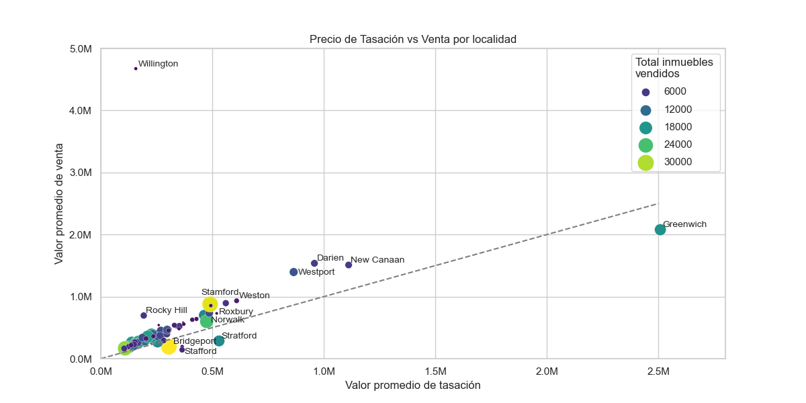

Se muestra el precio de venta medio para los 20 pueblos con los precio de venta más elevados. El color representa a los mejores ratios de venta (precio de venta / valore del inmueble)... Se han eliminado los outliers a partir del z-score para tener un valor real Permite identificar los mercados más grandes y, de entre estos, los que tienen mejor ratio de valor de venta, respecto al valor de taación.
Gráfico dónde se muestra el valor de venta segun el tipo de inmueble y por cada año, así podemos ver la evolución. Estos datos han sido normalizados con el valor de la inflación de estados unidos (https://fred.stlouisfed.org/series/CPIAUCNS), para ver una evolución no enganyosa... Además, si hacemos hover podemos identificar cada una de las tendencias con más facilidad.
A contnuación se realiza un filtrado por el pueblo de Norwalk, que tiene el mejor ratio de venta. No se muestran los tipod e residencia de Three y Four Family debido a la falta de datos en este pueblo.
Hola
